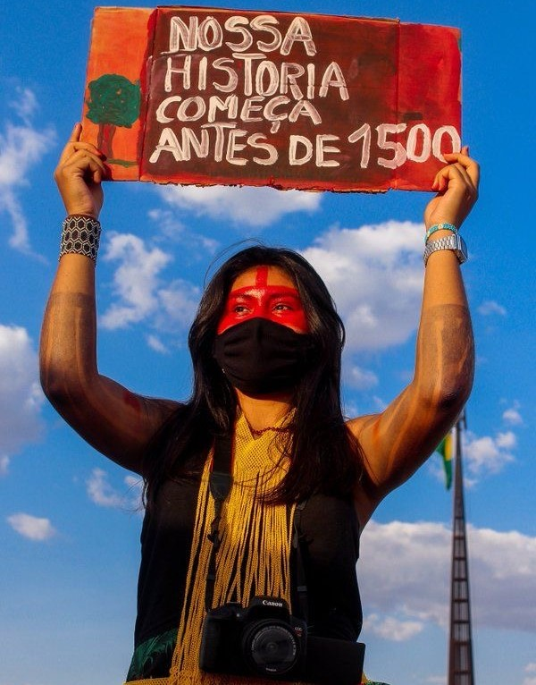

O NOSSO OBJETIVO É
DESMISTIFICAR ESTEREÓTIPOS PREJUDICIAIS E CELEBRAR A RIQUEZA DA CULTURA INDÍGENA,
PROPAGANDO CONHECIMENTO SOBRE ELA.Junte-se a nós nessa jornada de descoberta e sensibilização. Através deste site, esperamos disseminar o entendimento e apreciação da cultura indígena, contribuindo para um mundo mais inclusivo e diverso. Explore, aprenda e compartilhe conosco esse compromisso com a valorização da nossa herança cultural indígena.
Saiba Mais:
INSTAGRAM:
Acompanhe nosso Instagram para posts informativos e curiosidades indígenas!
TWITTER:
Siga-nos no Twitter para atualizações do nosso projeto e divulgações do mesmo.
ACERVO AUDIOVISUAL:
Acesse nosso site compartilhado para ver vídeos, fotos e textos de informações adicionais!

Os povos indígenas do Brasil são a parcela de população descendente dos povos originários que conseguiram
se preservar após a colonização. Segundo o IBGE (Instituto Brasileiro de Geografia e Estatística) no ano de
2010, foram registrados no Brasil a existência de 274 línguas indígenas no país, onde vivem 817.963 mil indígenas
de 305 diferentes etnias.
É de extrema importância a criação de portais informativos que tenham o objetivo de acabar com o estereótipo e com preconceitos contra esses povos originários do Brasil. Por isso criamos o projeto Raízes Originárias, um portal informativo que busca espalhar a cultura indígena de forma digital e descomplicada com um site intuitivo para os leitores com design moderno e minimalista buscando atingir um maior número de usuários.
Este trabalho foi desenvolvido em equipe com o apoio de pessoas especialistas na área, já que a ideia central é desmistificar o preconceito com os povos originários do Brasil. O resultado se deu graças as análises feitas através de artigos científicos, depoimentos e pesquisas. Com tudo, chegamos à conclusão de que os povos indígenas são fortemente excluídos da sociedade como se não pertencesse à pátria brasileira, sendo constantemente alvos e vítimas da xenofobia, por maior parte dve pessoas que descendem do homem branco europeu, onde uma grande parte dessas pessoas se julgam ser a raça suprema e pura até mesmo antes de 1500.
É de extrema importância a criação de portais informativos que tenham o objetivo de acabar com o estereótipo e com preconceitos contra esses povos originários do Brasil. Por isso criamos o projeto Raízes Originárias, um portal informativo que busca espalhar a cultura indígena de forma digital e descomplicada com um site intuitivo para os leitores com design moderno e minimalista buscando atingir um maior número de usuários.
Este trabalho foi desenvolvido em equipe com o apoio de pessoas especialistas na área, já que a ideia central é desmistificar o preconceito com os povos originários do Brasil. O resultado se deu graças as análises feitas através de artigos científicos, depoimentos e pesquisas. Com tudo, chegamos à conclusão de que os povos indígenas são fortemente excluídos da sociedade como se não pertencesse à pátria brasileira, sendo constantemente alvos e vítimas da xenofobia, por maior parte dve pessoas que descendem do homem branco europeu, onde uma grande parte dessas pessoas se julgam ser a raça suprema e pura até mesmo antes de 1500.